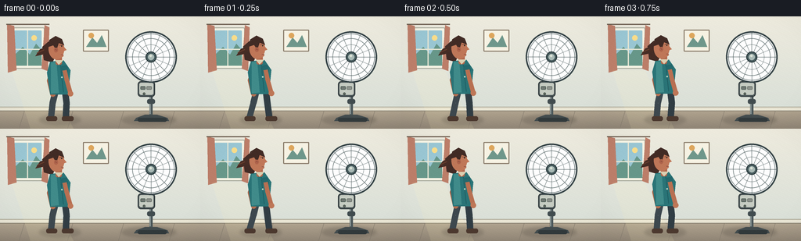
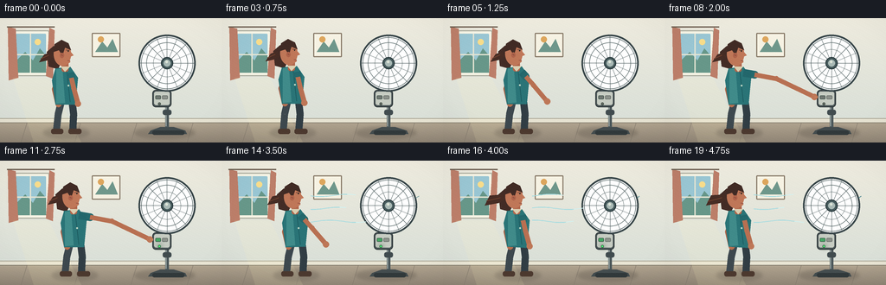
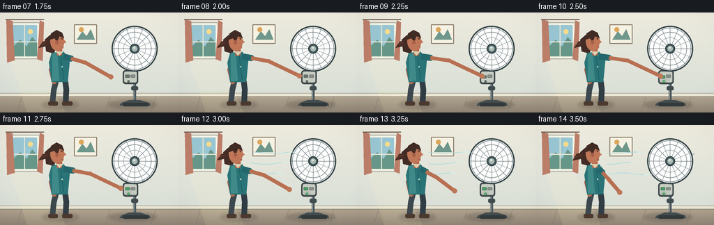

CODING AGENTS AS PIXEL WORLD MODELS
traex/GPT-5.6-Sol · motion_rationality_0047
点击播放 · 原生 RGB 像素
逐轮保存的候选
回放视频、检查图与代码变化。
每份候选均可单独播放。实际图片检查记录在下方工具轨迹中。
候选 01播放与检查图
点击播放 · 原生 RGB 像素


展开代码变化
--- 上一保存版本
+++ 本次保存版本
@@ -0,0 +1,275 @@
+from pathlib import Path
+import math
+import numpy as np
+from PIL import Image, ImageDraw, ImageFilter
+import artifact_io
+
+CASE_DIR = Path(__file__).resolve().parent
+W, H, N, SCALE = 256, 144, 20, 4
+
+# Supersampled vector drawing utilities.
+def sc(v): return int(round(v * SCALE))
+def box(b): return tuple(sc(v) for v in b)
+def pts(seq): return [(sc(x), sc(y)) for x, y in seq]
+def clamp(x, a=0.0, b=1.0): return max(a, min(b, x))
+def smooth(x):
+ x = clamp(x)
+ return x*x*(3-2*x)
+
+def line(draw, xy, fill, width=1, joint='curve'):
+ draw.line(pts(xy), fill=fill, width=max(1, sc(width)), joint=joint)
+def ellipse(draw, b, fill=None, outline=None, width=1):
+ draw.ellipse(box(b), fill=fill, outline=outline, width=max(1, sc(width)))
+def polygon(draw, xy, fill): draw.polygon(pts(xy), fill=fill)
+def rr(draw, b, r, fill=None, outline=None, width=1):
+ draw.rounded_rectangle(box(b), radius=sc(r), fill=fill, outline=outline, width=max(1, sc(width)))
+
+def polar(cx, cy, r, a): return (cx + math.cos(a)*r, cy + math.sin(a)*r)
+
+def blade_polygon(cx, cy, angle):
+ # A gently swept, broad fan blade in local coordinates.
+ local = [(5,-2.7),(11,-5.2),(20,-8.2),(28,-6.2),(29,-1.0),(23,4.0),(14,5.5),(7,3.0)]
+ ca, sa = math.cos(angle), math.sin(angle)
+ return [(cx + x*ca-y*sa, cy + x*sa+y*ca) for x,y in local]
+
+def draw_background(img):
+ # Calm, warm room with a subtle vertical wall gradient.
+ a = np.array(img)
+ for y in range(sc(119)):
+ t = y / sc(118)
+ c0 = np.array([238, 235, 222], dtype=float)
+ c1 = np.array([218, 224, 216], dtype=float)
+ c = (c0*(1-t) + c1*t).astype(np.uint8)
+ a[y, :, :3] = c
+ for y in range(sc(119), sc(H)):
+ t = (y-sc(119))/max(1, sc(25))
+ c = (np.array([179,166,145])*(1-t) + np.array([143,132,117])*t).astype(np.uint8)
+ a[y,:,:3] = c
+ img.paste(Image.fromarray(a, 'RGBA'))
+ d = ImageDraw.Draw(img)
+ # Window and soft outdoor view.
+ rr(d, (13,14,57,67), 2, fill=(246,244,229), outline=(171,173,159), width=1.2)
+ rr(d, (17,18,53,63), 1, fill=(153,198,211))
+ polygon(d, [(17,51),(29,39),(38,49),(46,35),(53,43),(53,63),(17,63)], (103,151,137))
+ ellipse(d, (40,24,47,31), fill=(248,220,138))
+ line(d, [(35,18),(35,63)], (229,229,211), 1.4)
+ line(d, [(17,42),(53,42)], (229,229,211), 1.4)
+ # Curtains frame the window but leave it airy.
+ polygon(d, [(9,10),(18,12),(21,69),(10,72)], (188,126,105))
+ polygon(d, [(57,11),(63,14),(61,70),(53,67)], (188,126,105))
+ line(d, [(8,10),(63,10)], (111,96,82), 1.6)
+ # A framed abstract print above the fan-side empty wall.
+ rr(d, (106,17,139,45), 1, fill=(246,242,227), outline=(134,120,102), width=1.3)
+ polygon(d, [(110,39),(118,27),(124,34),(130,24),(136,39)], (111,151,139))
+ ellipse(d, (113,21,120,28), fill=(221,166,93))
+ # Baseboard and floor seams.
+ d.rectangle(box((0,116,256,121)), fill=(232,228,211))
+ line(d, [(0,116),(256,116)], (174,170,153), .9)
+ line(d, [(0,121),(256,121)], (126,120,105), .7)
+ for x in [31, 93, 158, 223]:
+ line(d, [(x,121),(x-7,144)], (130,121,108), .55)
+ # Soft patches of window light.
+ light = Image.new('RGBA', img.size, (0,0,0,0)); ld = ImageDraw.Draw(light)
+ polygon(ld, [(15,69),(56,69),(94,144),(39,144)], (255,244,190,30))
+ img.alpha_composite(light)
+
+def draw_floor_shadows(img, person_x, fan_running):
+ sh = Image.new('RGBA', img.size, (0,0,0,0)); sd = ImageDraw.Draw(sh)
+ ellipse(sd, (155,126,225,139), fill=(54,48,43,55))
+ ellipse(sd, (person_x-20,126,person_x+33,139), fill=(54,48,43,48))
+ sh = sh.filter(ImageFilter.GaussianBlur(sc(2.0)))
+ img.alpha_composite(sh)
+
+def draw_fan(img, frame):
+ d = ImageDraw.Draw(img, 'RGBA')
+ cx, cy = 193, 52
+ on = frame >= 10
+ run = smooth((frame-9)/5)
+ # Base, mast, and height collar.
+ polygon(d, [(174,130),(185,126),(201,126),(214,130),(216,134),(171,134)], (67,76,78,255))
+ rr(d, (176,130,213,135), 2.3, fill=(49,57,59,255))
+ line(d, [(193,126),(193,76)], (76,88,91,255), 4.3)
+ line(d, [(192,125),(192,77)], (165,177,175,255), 1.1)
+ rr(d, (188,106,198,112), 2.2, fill=(65,76,79,255))
+ # Control pod prominently placed on the left side of the mast.
+ rr(d, (176,83,198,103), 4, fill=(75,86,88,255), outline=(45,54,56,255), width=1.0)
+ rr(d, (178,85,196,100.5), 2.6, fill=(198,204,194,255))
+ # Main power button: depressed when the fingertip arrives.
+ depressed = frame in (9,10)
+ by = 89.5 + (1.0 if depressed else 0)
+ rr(d, (179.6,by,185.8,by+4.2), 1.1,
+ fill=((70,164,99,255) if on else (112,119,114,255)),
+ outline=(49,72,62,255), width=.6)
+ rr(d, (187.2,89.5,193.7,93.7), 1.1, fill=(140,146,139,255), outline=(83,90,86,255), width=.5)
+ # Status lamp glows only after the press.
+ if on:
+ glow = Image.new('RGBA', img.size, (0,0,0,0)); gd = ImageDraw.Draw(glow)
+ ellipse(gd, (181.0,96.2,187.0,102.2), fill=(86,239,129,85))
+ glow = glow.filter(ImageFilter.GaussianBlur(sc(2.2))); img.alpha_composite(glow)
+ d = ImageDraw.Draw(img, 'RGBA')
+ ellipse(d, (182.4,97.4,185.7,100.7), fill=((74,226,113,255) if on else (101,106,101,255)), outline=(45,65,52,255), width=.45)
+ # Neck and motor case.
+ rr(d, (188,70,199,82), 3, fill=(65,75,78,255))
+ ellipse(d, (188,42,224,65), fill=(63,73,76,255))
+ rr(d, (202,46,219,60), 5, fill=(69,80,83,255))
+ # Blade layer behind front grille.
+ blade_layer = Image.new('RGBA', img.size, (0,0,0,0)); bd = ImageDraw.Draw(blade_layer)
+ # Integrated angle: stationary through pressing, then visibly accelerates.
+ angle = 0.42
+ if on:
+ angle += sum(0.18 + 0.38*smooth((k-9)/5) for k in range(10, frame+1))
+ if run > .58:
+ ellipse(bd, (cx-28,cy-28,cx+28,cy+28), fill=(139,184,187,int(22+24*run)))
+ # Multiple faint blade positions convey rotational blur without hiding mechanics.
+ for ghost in range(6):
+ ga = angle + ghost*(2*math.pi/18)
+ alpha = int(28 + 18*(1-run))
+ for j in range(3): polygon(bd, blade_polygon(cx,cy,ga+j*2*math.pi/3), (93,151,158,alpha))
+ else:
+ for j in range(3):
+ polygon(bd, blade_polygon(cx,cy,angle+j*2*math.pi/3), (98,157,163,235))
+ # small highlight near trailing edge
+ img.alpha_composite(blade_layer)
+ d = ImageDraw.Draw(img, 'RGBA')
+ # Cage: concentric rings and spokes stay crisp while blades spin.
+ ellipse(d, (160,19,226,85), fill=(255,255,255,7), outline=(55,69,72,255), width=2.0)
+ ellipse(d, (163,22,223,82), outline=(105,119,119,230), width=.7)
+ ellipse(d, (169,28,217,76), outline=(113,127,127,210), width=.65)
+ ellipse(d, (177,36,209,68), outline=(117,130,130,190), width=.55)
+ for i in range(16):
+ a = i*math.pi/8
+ line(d, [polar(cx,cy,6,a), polar(cx,cy,32,a)], (80,95,97,190), .58)
+ ellipse(d, (186,45,200,59), fill=(70,90,92,255), outline=(38,54,57,255), width=1)
+ ellipse(d, (189,48,197,56), fill=(169,185,181,255))
+ ellipse(d, (191,49,194,52), fill=(221,228,216,210))
+ # Tiny vibration only after full speed, grounded at head not whole fan.
+ if frame >= 14:
+ line(d, [(224.5,43),(227+1.2*math.sin(frame),41)], (87,141,150,100), .7)
+
+def draw_airflow(img, frame):
+ if frame < 12: return
+ d = ImageDraw.Draw(img, 'RGBA')
+ strength = smooth((frame-11)/4)
+ # Wind travels from fan toward the person; phase makes it drift leftward.
+ for idx, (y, length) in enumerate([(40,63),(55,77),(70,66)]):
+ head = 171 - ((frame-12)*8 + idx*11) % 34
+ x0 = max(103, head-length)
+ x1 = head
+ samples=[]
+ for q in range(28):
+ x = x0 + (x1-x0)*q/27
+ yy = y + math.sin((x*0.105) + frame*1.05 + idx)*1.35
+ samples.append((x,yy))
+ line(d, samples, (165,220,225,int(45+70*strength)), 1.05)
+ # short bright dash at leading edge
+ line(d, samples[-6:], (210,242,241,int(80+65*strength)), 1.0)
+
+def draw_person(img, frame):
+ d = ImageDraw.Draw(img, 'RGBA')
+ walk = smooth(frame/5.5)
+ bx = 70 + 10*walk
+ bob = -1.0*math.sin(math.pi*clamp(frame/6)) if frame <= 6 else 0
+ wind = smooth((frame-12)/5)
+ # Reach begins after approach, hand dwells on the power switch, then retracts.
+ if frame < 3: reach = 0.0
+ elif frame <= 9: reach = smooth((frame-3)/6)
+ elif frame <= 10: reach = 1.0
+ elif frame <= 16: reach = 1-smooth((frame-10)/6)
+ else: reach = 0.0
+
+ # Legs and shoes, with restrained stepping early in the shot.
+ hipy = 95+bob
+ step = (1-walk)*math.sin(frame*1.15)*4
+ back_ankle=(bx-5-step,130); front_ankle=(bx+14+step,130)
+ line(d, [(bx+1,hipy),(bx-3,111),back_ankle], (61,72,78,255), 8.0)
+ line(d, [(bx+13,hipy),(bx+15,111),front_ankle], (49,61,68,255), 8.3)
+ rr(d, (back_ankle[0]-6,128,back_ankle[0]+8,134), 2.6, fill=(76,57,47,255))
+ rr(d, (front_ankle[0]-5,128,front_ankle[0]+10,134), 2.6, fill=(76,57,47,255))
+
+ # Far arm is relaxed and mostly behind the body.
+ line(d, [(bx-1,63+bob),(bx-7,82+bob),(bx-3,99+bob)], (171,101,74,255), 6.4)
+ ellipse(d, (bx-6,95+bob,bx+1,103+bob), fill=(181,111,80,255))
+
+ # Hair behind head, including a ponytail that reacts only after airflow arrives.
+ hair_dx = -7*wind + math.sin(frame*1.5)*0.8*wind
+ polygon(d, [(bx-8,32+bob),(bx-16,39+bob),(bx-14,56+bob),(bx-3,59+bob),(bx+4,43+bob)], (67,44,38,255))
+ # ponytail silhouette
+ polygon(d, [(bx-11,39+bob),(bx-19+hair_dx,42+bob-2*wind),(bx-25+hair_dx,51+bob+1*wind),
+ (bx-16,49+bob),(bx-9,45+bob)], (71,45,37,255))
+ line(d, [(bx-14,43+bob),(bx-23+hair_dx,47+bob+math.sin(frame)*wind)], (113,66,47,220), 1.1)
+
+ # Torso: teal overshirt with subtle seam/highlight. Hem flutters after fan starts.
+ hem_wave = math.sin(frame*1.7)*1.4*wind
+ polygon(d, [(bx-6,58+bob),(bx+11,56+bob),(bx+20,69+bob),(bx+17,100+bob+hem_wave),
+ (bx-6,100+bob-hem_wave*.4),(bx-10,72+bob)], (42,116,119,255))
+ polygon(d, [(bx-5,59+bob),(bx+2,58+bob),(bx+5,98+bob),(bx-5,99+bob)], (64,139,138,180))
+ line(d, [(bx+7,62+bob),(bx+11,97+bob)], (27,88,93,170), .75)
+ ellipse(d, (bx+8,77+bob,bx+10,79+bob), fill=(191,214,196,220))
+ # Near sleeve, aimed with the reaching upper arm.
+ shoulder=(bx+11,63+bob)
+ rest_elbow=(bx+15,81+bob); rest_hand=(bx+20,99+bob)
+ target_elbow=(132,69); target_hand=(179.6,91.5 if frame in (9,10) else 90.5)
+ elbow=(rest_elbow[0]*(1-reach)+target_elbow[0]*reach, rest_elbow[1]*(1-reach)+target_elbow[1]*reach)
+ hand=(rest_hand[0]*(1-reach)+target_hand[0]*reach, rest_hand[1]*(1-reach)+target_hand[1]*reach)
+ # Sleeve ends one third down upper arm.
+ sleeve_end=(shoulder[0]+(elbow[0]-shoulder[0])*.34, shoulder[1]+(elbow[1]-shoulder[1])*.34)
+ line(d, [shoulder,sleeve_end], (35,103,108,255), 9.0)
+ ellipse(d, (sleeve_end[0]-4.4,sleeve_end[1]-4.4,sleeve_end[0]+4.4,sleeve_end[1]+4.4), fill=(37,105,109,255))
+ # Forearm follows a natural two-segment skeleton; joints are rounded.
+ line(d, [sleeve_end,elbow,hand], (184,112,82,255), 5.6)
+ ellipse(d, (elbow[0]-2.8,elbow[1]-2.8,elbow[0]+2.8,elbow[1]+2.8), fill=(184,112,82,255))
+ # Hand and a small extended index finger at full reach.
+ if reach > .82:
+ ellipse(d, (hand[0]-4.2,hand[1]-3.6,hand[0]+3.1,hand[1]+3.7), fill=(190,119,87,255))
+ line(d, [(hand[0]-1,hand[1]),(hand[0]+3.2,hand[1])], (197,127,92,255), 2.1)
+ else:
+ ellipse(d, (hand[0]-3.6,hand[1]-3.6,hand[0]+3.6,hand[1]+3.6), fill=(190,119,87,255))
+
+ # Neck and head in profile, visibly looking at the fan controls.
+ rr(d, (bx+1,50+bob,bx+9,62+bob), 2.5, fill=(177,102,75,255))
+ ellipse(d, (bx-8,28+bob,bx+12,55+bob), fill=(191,119,88,255))
+ # Profile nose and chin.
+ polygon(d, [(bx+10,37+bob),(bx+15,43+bob),(bx+10,45+bob),(bx+11,51+bob),(bx+5,55+bob)], (192,119,88,255))
+ # Hair cap overlaps top of head.
+ polygon(d, [(bx-8,39+bob),(bx-7,30+bob),(bx+1,25+bob),(bx+9,29+bob),(bx+12,37+bob),
+ (bx+5,34+bob),(bx+2,43+bob),(bx-2,37+bob)], (65,43,37,255))
+ # Ear, eye, brow, and understated smile.
+ ellipse(d, (bx-1,40+bob,bx+4,46+bob), fill=(174,99,75,255))
+ line(d, [(bx+.5,42+bob),(bx+2.2,43.3+bob)], (112,63,52,230), .55)
+ line(d, [(bx+6,36.8+bob),(bx+10,37.2+bob)], (70,49,43,255), .85)
+ ellipse(d, (bx+8.1,37.4+bob,bx+9.4,38.8+bob), fill=(36,35,32,255))
+ line(d, [(bx+8,49+bob),(bx+11,49.5+bob)], (125,66,60,220), .7)
+ # Shirt collar.
+ polygon(d, [(bx,56+bob),(bx+5,62+bob),(bx+11,56+bob)], (219,208,178,230))
+
+def finish_frame(frame):
+ # Downsample and add a stable, very subtle film-like texture for richer surfaces.
+ frame = frame.convert('RGB').resize((W,H), Image.Resampling.LANCZOS)
+ arr = np.asarray(frame).astype(np.int16)
+ yy, xx = np.indices((H,W))
+ texture = (((xx*13 + yy*7) % 11)-5) * 0.20
+ arr = np.clip(arr + texture[...,None], 0, 255).astype(np.uint8)
+ return arr
+
+def make_frame(i):
+ img = Image.new('RGBA', (W*SCALE,H*SCALE), (235,233,221,255))
+ draw_background(img)
+ px = 70 + 10*smooth(i/5.5)
+ draw_floor_shadows(img, px, i>=10)
+ draw_fan(img, i)
+ draw_airflow(img, i)
+ draw_person(img, i)
+ # Gentle vignette unifies the scene and keeps focus center-right.
+ vig = Image.new('RGBA', img.size, (0,0,0,0)); va=np.zeros((H*SCALE,W*SCALE,4),dtype=np.uint8)
+ y,x=np.indices((H*SCALE,W*SCALE)); nx=(x-W*SCALE*.53)/(W*SCALE*.72); ny=(y-H*SCALE*.48)/(H*SCALE*.82)
+ alpha=np.clip((nx*nx+ny*ny-.38)*24,0,19).astype(np.uint8); va[:,:,3]=alpha
+ va[:,:,:3]=np.array([45,43,42],dtype=np.uint8); vig=Image.fromarray(va,'RGBA'); img.alpha_composite(vig)
+ return finish_frame(img)
+
+def main():
+ frames = np.stack([make_frame(i) for i in range(N)], axis=0)
+ artifact_io.save(frames, CASE_DIR)
+ print(f'saved {frames.shape} RGB frames to {CASE_DIR}')
+
+if __name__ == '__main__':
+ main()
可观测工具轨迹
实际执行的命令与返回图片。
命令 1exit 0
/bin/bash -lc "cat prompt.txt && printf '\\n--- GENERATION_RULES ---\\n' && cat GENERATION_RULES.md"
命令 2exit 0
/bin/bash -lc "cat task_spec.json && printf '\\n--- FILES ---\\n' && find . -maxdepth 2 -type f -printf '%p\\n' | sort"
命令 3exit 0
/bin/bash -lc "sed -n '1,240p' artifact_io.py"
命令 4exit 1
/bin/bash -lc "cat > generate.py <<'PY'
from pathlib import Path
import math
import numpy as np
from PIL import Image, ImageDraw, ImageFilter
import artifact_io
CASE_DIR = Path(__file__).resolve().parent
W, H, N, SCALE = 256, 144, 20, 4
# Supersampled vector drawing utilities.
def sc(v): return int(round(v * SCALE))
def box(b): return tuple(sc(v) for v in b)
def pts(seq): return [(sc(x), sc(y)) for x, y in seq]
def clamp(x, a=0.0, b=1.0): return max(a, min(b, x))
def smooth(x):
x = clamp(x)
return x*x*(3-2*x)
def line(draw, xy, fill, width=1, joint='curve'):
draw.line(pts(xy), fill=fill, width=max(1, sc(width)), joint=joint)
def ellipse(draw, b, fill=None, outline=None, width=1):
draw.ellipse(box(b), fill=fill, outline=outline, width=max(1, sc(width)))
def polygon(draw, xy, fill): draw.polygon(pts(xy), fill=fill)
def rr(draw, b, r, fill=None, outline=None, width=1):
draw.rounded_rectangle(box(b), radius=sc(r), fill=fill, outline=outline, width=max(1, sc(width)))
def polar(cx, cy, r, a): return (cx + math.cos(a)*r, cy + math.sin(a)*r)
def blade_polygon(cx, cy, angle):
# A gently swept, broad fan blade in local coordinates.
local = [(5,-2.7),(11,-5.2),(20,-8.2),(28,-6.2),(29,-1.0),(23,4.0),(14,5.5),(7,3.0)]
ca, sa = math.cos(angle), math.sin(angle)
return [(cx + x*ca-y*sa, cy + x*sa+y*ca) for x,y in local]
def draw_background(img):
# Calm, warm room with a subtle vertical wall gradient.
a = np.asarray(img)
for y in range(sc(119)):
t = y / sc(118)
c0 = np.array([238, 235, 222], dtype=float)
c1 = np.array([218, 224, 216], dtype=float)
c = (c0*(1-t) + c1*t).astype(np.uint8)
a[y, :, :] = c
for y in range(sc(119), sc(H)):
t = (y-sc(119))/max(1, sc(25))
c = (np.array([179,166,145])*(1-t) + np.array([143,132,117])*t).astype(np.uint8)
a[y,:,:] = c
d = ImageDraw.Draw(img)
# Window and soft outdoor view.
rr(d, (13,14,57,67), 2, fill=(246,244,229), outline=(171,173,159), width=1.2)
rr(d, (17,18,53,63), 1, fill=(153,198,211))
polygon(d, [(17,51),(29,39),(38,49),(46,35),(53,43),(53,63),(17,63)], (103,151,137))
ellipse(d, (40,24,47,31), fill=(248,220,138))
line(d, [(35,18),(35,63)], (229,229,211), 1.4)
line(d, [(17,42),(53,42)], (229,229,211), 1.4)
# Curtains frame the window but leave it airy.
polygon(d, [(9,10),(18,12),(21,69),(10,72)], (188,126,105))
polygon(d, [(57,11),(63,14),(61,70),(53,67)], (188,126,105))
line(d, [(8,10),(63,10)], (111,96,82), 1.6)
# A framed abstract print above the fan-side empty wall.
rr(d, (106,17,139,45), 1, fill=(246,242,227), outline=(134,120,102), width=1.3)
polygon(d, [(110,39),(118,27),(124,34),(130,24),(136,39)], (111,151,139))
ellipse(d, (113,21,120,28), fill=(221,166,93))
# Baseboard and floor seams.
d.rectangle(box((0,116,256,121)), fill=(232,228,211))
line(d, [(0,116),(256,116)], (174,170,153), .9)
line(d, [(0,121),(256,121)], (126,120,105), .7)
for x in [31, 93, 158, 223]:
line(d, [(x,121),(x-7,144)], (130,121,108), .55)
# Soft patches of window light.
light = Image.new('RGBA', img.size, (0,0,0,0)); ld = ImageDraw.Draw(light)
polygon(ld, [(15,69),(56,69),(94,144),(39,144)], (255,244,190,30))
img.alpha_composite(light)
def draw_floor_shadows(img, person_x, fan_running):
sh = Image.new('RGBA', img.size, (0,0,0,0)); sd = ImageDraw.Draw(sh)
ellipse(sd, (155,126,225,139), fill=(54,48,43,55))
ellipse(sd, (person_x-20,126,person_x+33,139), fill=(54,48,43,48))
sh = sh.filter(ImageFilter.GaussianBlur(sc(2.0)))
img.alpha_composite(sh)
def draw_fan(img, frame):
d = ImageDraw.Draw(img, 'RGBA')
cx, cy = 193, 52
on = frame >= 10
run = smooth((frame-9)/5)
# Base, mast, and height collar.
polygon(d, [(174,130),(185,126),(201,126),(214,130),(216,134),(171,134)], (67,76,78,255))
rr(d, (176,130,213,135), 2.3, fill=(49,57,59,255))
line(d, [(193,126),(193,76)], (76,88,91,255), 4.3)
line(d, [(192,125),(192,77)], (165,177,175,255), 1.1)
rr(d, (188,106,198,112), 2.2, fill=(65,76,79,255))
# Control pod prominently placed on the left side of the mast.
rr(d, (176,83,198,103), 4, fill=(75,86,88,255), outline=(45,54,56,255), width=1.0)
rr(d, (178,85,196,100.5), 2.6, fill=(198,204,194,255))
# Main power button: depressed when the fingertip arrives.
depressed = frame in (9,10)
by = 89.5 + (1.0 if depressed else 0)
rr(d, (179.6,by,185.8,by+4.2), 1.1,
fill=((70,164,99,255) if on else (112,119,114,255)),
outline=(49,72,62,255), width=.6)
rr(d, (187.2,89.5,193.7,93.7), 1.1, fill=(140,146,139,255), outline=(83,90,86,255), width=.5)
# Status lamp glows only after the press.
if on:
glow = Image.new('RGBA', img.size, (0,0,0,0)); gd = ImageDraw.Draw(glow)
ellipse(gd, (181.0,96.2,187.0,102.2), fill=(86,239,129,85))
glow = glow.filter(ImageFilter.GaussianBlur(sc(2.2))); img.alpha_composite(glow)
d = ImageDraw.Draw(img, 'RGBA')
ellipse(d, (182.4,97.4,185.7,100.7), fill=((74,226,113,255) if on else (101,106,101,255)), outline=(45,65,52,255), width=.45)
# Neck and motor case.
rr(d, (188,70,199,82), 3, fill=(65,75,78,255))
ellipse(d, (188,42,224,65), fill=(63,73,76,255))
rr(d, (202,46,219,60), 5, fill=(69,80,83,255))
# Blade layer behind front grille.
blade_layer = Image.new('RGBA', img.size, (0,0,0,0)); bd = ImageDraw.Draw(blade_layer)
# Integrated angle: stationary through pressing, then visibly accelerates.
angle = 0.42
if on:
angle += sum(0.18 + 0.38*smooth((k-9)/5) for k in range(10, frame+1))
if run > .58:
ellipse(bd, (cx-28,cy-28,cx+28,cy+28), fill=(139,184,187,int(22+24*run)))
# Multiple faint blade positions convey rotational blur without hiding mechanics.
for ghost in range(6):
ga = angle + ghost*(2*math.pi/18)
alpha = int(28 + 18*(1-run))
for j in range(3): polygon(bd, blade_polygon(cx,cy,ga+j*2*math.pi/3), (93,151,158,alpha))
else:
for j in range(3):
polygon(bd, blade_polygon(cx,cy,angle+j*2*math.pi/3), (98,157,163,235))
# small highlight near trailing edge
img.alpha_composite(blade_layer)
d = ImageDraw.Draw(img, 'RGBA')
# Cage: concentric rings and spokes stay crisp while blades spin.
ellipse(d, (160,19,226,85), fill=(255,255,255,7), outline=(55,69,72,255), width=2.0)
ellipse(d, (163,22,223,82), outline=(105,119,119,230), width=.7)
ellipse(d, (169,28,217,76), outline=(113,127,127,210), width=.65)
ellipse(d, (177,36,209,68), outline=(117,130,130,190), width=.55)
for i in range(16):
a = i*math.pi/8
line(d, [polar(cx,cy,6,a), polar(cx,cy,32,a)], (80,95,97,190), .58)
ellipse(d, (186,45,200,59), fill=(70,90,92,255), outline=(38,54,57,255), width=1)
ellipse(d, (189,48,197,56), fill=(169,185,181,255))
ellipse(d, (191,49,194,52), fill=(221,228,216,210))
# Tiny vibration only after full speed, grounded at head not whole fan.
if frame >= 14:
line(d, [(224.5,43),(227+1.2*math.sin(frame),41)], (87,141,150,100), .7)
def draw_airflow(img, frame):
if frame < 12: return
d = ImageDraw.Draw(img, 'RGBA')
strength = smooth((frame-11)/4)
# Wind travels from fan toward the person; phase makes it drift leftward.
for idx, (y, length) in enumerate([(40,63),(55,77),(70,66)]):
head = 171 - ((frame-12)*8 + idx*11) % 34
x0 = max(103, head-length)
x1 = head
samples=[]
for q in range(28):
x = x0 + (x1-x0)*q/27
yy = y + math.sin((x*0.105) + frame*1.05 + idx)*1.35
samples.append((x,yy))
line(d, samples, (165,220,225,int(45+70*strength)), 1.05)
# short bright dash at leading edge
line(d, samples[-6:], (210,242,241,int(80+65*strength)), 1.0)
def draw_person(img, frame):
d = ImageDraw.Draw(img, 'RGBA')
walk = smooth(frame/5.5)
bx = 70 + 10*walk
bob = -1.0*math.sin(math.pi*clamp(frame/6)) if frame <= 6 else 0
wind = smooth((frame-12)/5)
# Reach begins after approach, hand dwells on the power switch, then retracts.
if frame < 3: reach = 0.0
elif frame <= 9: reach = smooth((frame-3)/6)
elif frame <= 10: reach = 1.0
elif frame <= 16: reach = 1-smooth((frame-10)/6)
else: reach = 0.0
# Legs and shoes, with restrained stepping early in the shot.
hipy = 95+bob
step = (1-walk)*math.sin(frame*1.15)*4
back_ankle=(bx-5-step,130); front_ankle=(bx+14+step,130)
line(d, [(bx+1,hipy),(bx-3,111),back_ankle], (61,72,78,255), 8.0)
line(d, [(bx+13,hipy),(bx+15,111),front_ankle], (49,61,68,255), 8.3)
rr(d, (back_ankle[0]-6,128,back_ankle[0]+8,134), 2.6, fill=(76,57,47,255))
rr(d, (front_ankle[0]-5,128,front_ankle[0]+10,134), 2.6, fill=(76,57,47,255))
# Far arm is relaxed and mostly behind the body.
line(d, [(bx-1,63+bob),(bx-7,82+bob),(bx-3,99+bob)], (171,101,74,255), 6.4)
ellipse(d, (bx-6,95+bob,bx+1,103+bob), fill=(181,111,80,255))
# Hair behind head, including a ponytail that reacts only after airflow arrives.
hair_dx = -7*wind + math.sin(frame*1.5)*0.8*wind
polygon(d, [(bx-8,32+bob),(bx-16,39+bob),(bx-14,56+bob),(bx-3,59+bob),(bx+4,43+bob)], (67,44,38,255))
# ponytail silhouette
polygon(d, [(bx-11,39+bob),(bx-19+hair_dx,42+bob-2*wind),(bx-25+hair_dx,51+bob+1*wind),
(bx-16,49+bob),(bx-9,45+bob)], (71,45,37,255))
line(d, [(bx-14,43+bob),(bx-23+hair_dx,47+bob+math.sin(frame)*wind)], (113,66,47,220), 1.1)
# Torso: teal overshirt with subtle seam/highlight. Hem flutters after fan starts.
hem_wave = math.sin(frame*1.7)*1.4*wind
polygon(d, [(bx-6,58+bob),(bx+11,56+bob),(bx+20,69+bob),(bx+17,100+bob+hem_wave),
(bx-6,100+bob-hem_wave*.4),(bx-10,72+bob)], (42,116,119,255))
polygon(d, [(bx-5,59+bob),(bx+2,58+bob),(bx+5,98+bob),(bx-5,99+bob)], (64,139,138,180))
line(d, [(bx+7,62+bob),(bx+11,97+bob)], (27,88,93,170), .75)
ellipse(d, (bx+8,77+bob,bx+10,79+bob), fill=(191,214,196,220))
# Near sleeve, aimed with the reaching upper arm.
shoulder=(bx+11,63+bob)
rest_elbow=(bx+15,81+bob); rest_hand=(bx+20,99+bob)
target_elbow=(132,69); target_hand=(179.6,91.5 if frame in (9,10) else 90.5)
elbow=(rest_elbow[0]*(1-reach)+target_elbow[0]*reach, rest_elbow[1]*(1-reach)+target_elbow[1]*reach)
hand=(rest_hand[0]*(1-reach)+target_hand[0]*reach, rest_hand[1]*(1-reach)+target_hand[1]*reach)
# Sleeve ends one third down upper arm.
sleeve_end=(shoulder[0]+(elbow[0]-shoulder[0])*.34, shoulder[1]+(elbow[1]-shoulder[1])*.34)
line(d, [shoulder,sleeve_end], (35,103,108,255), 9.0)
ellipse(d, (sleeve_end[0]-4.4,sleeve_end[1]-4.4,sleeve_end[0]+4.4,sleeve_end[1]+4.4), fill=(37,105,109,255))
# Forearm follows a natural two-segment skeleton; joints are rounded.
line(d, [sleeve_end,elbow,hand], (184,112,82,255), 5.6)
ellipse(d, (elbow[0]-2.8,elbow[1]-2.8,elbow[0]+2.8,elbow[1]+2.8), fill=(184,112,82,255))
# Hand and a small extended index finger at full reach.
if reach > .82:
ellipse(d, (hand[0]-4.2,hand[1]-3.6,hand[0]+3.1,hand[1]+3.7), fill=(190,119,87,255))
line(d, [(hand[0]-1,hand[1]),(hand[0]+3.2,hand[1])], (197,127,92,255), 2.1)
else:
ellipse(d, (hand[0]-3.6,hand[1]-3.6,hand[0]+3.6,hand[1]+3.6), fill=(190,119,87,255))
# Neck and head in profile, visibly looking at the fan controls.
rr(d, (bx+1,50+bob,bx+9,62+bob), 2.5, fill=(177,102,75,255))
ellipse(d, (bx-8,28+bob,bx+12,55+bob), fill=(191,119,88,255))
# Profile nose and chin.
polygon(d, [(bx+10,37+bob),(bx+15,43+bob),(bx+10,45+bob),(bx+11,51+bob),(bx+5,55+bob)], (192,119,88,255))
# Hair cap overlaps top of head.
polygon(d, [(bx-8,39+bob),(bx-7,30+bob),(bx+1,25+bob),(bx+9,29+bob),(bx+12,37+bob),
(bx+5,34+bob),(bx+2,43+bob),(bx-2,37+bob)], (65,43,37,255))
# Ear, eye, brow, and understated smile.
ellipse(d, (bx-1,40+bob,bx+4,46+bob), fill=(174,99,75,255))
line(d, [(bx+.5,42+bob),(bx+2.2,43.3+bob)], (112,63,52,230), .55)
line(d, [(bx+6,36.8+bob),(bx+10,37.2+bob)], (70,49,43,255), .85)
ellipse(d, (bx+8.1,37.4+bob,bx+9.4,38.8+bob), fill=(36,35,32,255))
line(d, [(bx+8,49+bob),(bx+11,49.5+bob)], (125,66,60,220), .7)
# Shirt collar.
polygon(d, [(bx,56+bob),(bx+5,62+bob),(bx+11,56+bob)], (219,208,178,230))
def finish_frame(frame):
# Downsample and add a stable, very subtle film-like texture for richer surfaces.
frame = frame.convert('RGB').resize((W,H), Image.Resampling.LANCZOS)
arr = np.asarray(frame).astype(np.int16)
yy, xx = np.indices((H,W))
texture = (((xx*13 + yy*7) % 11)-5) * 0.20
arr = np.clip(arr + texture[...,None], 0, 255).astype(np.uint8)
return arr
def make_frame(i):
img = Image.new('RGBA', (W*SCALE,H*SCALE), (235,233,221,255))
draw_background(img)
px = 70 + 10*smooth(i/5.5)
draw_floor_shadows(img, px, i>=10)
draw_fan(img, i)
draw_airflow(img, i)
draw_person(img, i)
# Gentle vignette unifies the scene and keeps focus center-right.
vig = Image.new('RGBA', img.size, (0,0,0,0)); va=np.zeros((H*SCALE,W*SCALE,4),dtype=np.uint8)
y,x=np.indices((H*SCALE,W*SCALE)); nx=(x-W*SCALE*.53)/(W*SCALE*.72); ny=(y-H*SCALE*.48)/(H*SCALE*.82)
alpha=np.clip((nx*nx+ny*ny-.38)*24,0,19).astype(np.uint8); va[:,:,3]=alpha
va[:,:,:3]=np.array([45,43,42],dtype=np.uint8); vig=Image.fromarray(va,'RGBA'); img.alpha_composite(vig)
return finish_frame(img)
def main():
frames = np.stack([make_frame(i) for i in range(N)], axis=0)
artifact_io.save(frames, CASE_DIR)
print(f'saved {frames.shape} RGB frames to {CASE_DIR}')
if __name__ == '__main__':
main()
PY
python generate.py"命令 5exit 0
/bin/bash -lc "python generate.py && python - <<'PY'
from pathlib import Path
import numpy as np
from PIL import Image
p=Path('.')
z=np.load('pixels.npz')['pixels']
files=sorted((p/'frames').glob('*.png'))
print('tensor',z.shape,z.dtype,'range',int(z.min()),int(z.max()))
print('frames',len(files),'first_mode_size',Image.open(files[0]).mode,Image.open(files[0]).size)
print('artifacts',[(x.name,x.stat().st_size) for x in [p/'pixels.npz',p/'inspection.png',p/'transition_check.png',p/'index.html']])
PY"命令 6exit 0
/bin/bash -lc "python - <<'PY'
from PIL import Image,ImageDraw
from pathlib import Path
ids=range(7,15)
w,h=256,144
out=Image.new('RGB',(w*4,(h+18)*2),(24,27,32)); d=ImageDraw.Draw(out)
for j,i in enumerate(ids):
x=(j%4)*w;y=(j//4)*(h+18)
d.text((x+4,y+3),f'frame {i:02d} {i/4:.2f}s',fill='white')
out.paste(Image.open(f'frames/{i:02d}.png'),(x,y+18))
out.save('.tmp/contact_sequence.png')
PY"视觉工具实际返回图片 1

视觉工具实际返回图片 2

视觉工具实际返回图片 3

保存候选 1 份；完成命令 6 次；可验证图片返回 3 张。原始 API 响应与完整日志保留在本地。